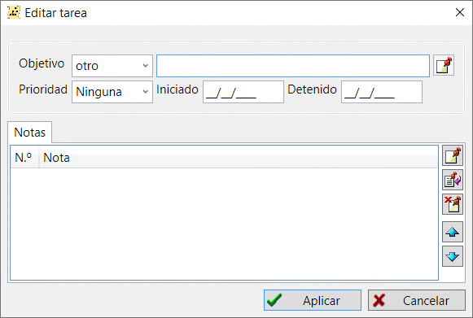

"Tarea" almacena información sobre una investigación sobre una persona, familia o fuente. Para ello, la tarea tiene un objetivo, una referencia a la persona o familia, la prioridad de la tarea y la fecha de vencimiento. También puede añadir notas de texto a una tarea para describir el progreso de la investigación.
Las tareas se agrupan por direcciones de búsqueda mediante registros de investigación.

En la pestaña "Tareas" de la ventana principal de trabajo hay una tabla unificadora que incluye todas las tareas disponibles en la base de datos. A la derecha de la tabla, un resumen de la tarea muestra toda la información sobre la tarea seleccionada y una lista de los registros de investigación vinculados a la tarea seleccionada.
Ver también: Persona, Familia, Fuente, Nota, Investigación.